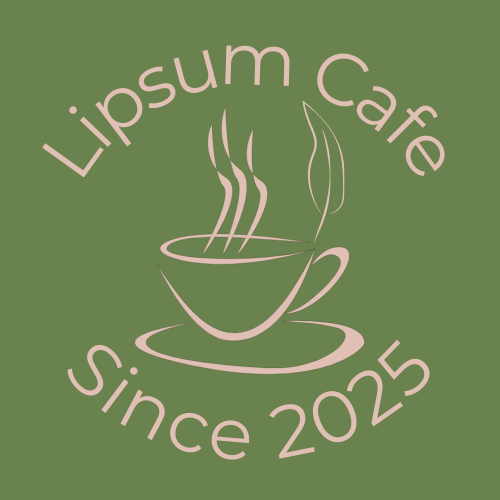

ポートフォリオについて
これは私の制作実績の紹介ページです。
架空のカフェ「LIPSUM CAFE」のホームページについて、以下の内容をもとに作成に取り組みました。
概要
| 項目 | 内容 |
|---|---|
| スキルセット | HTML / CSS / jQuery / Bootstrap / Illustrator / Photoshop / Figma / Canva |
| 架空のクライアント | 有機栽培のコーヒーとオーガニックフード専門カフェ。ブランドイメージを伝えるホームページ制作を依頼。 |
| 制作期間 | 2週間 |
| 担当範囲 | デザイン、コーディング、レスポンシブ対応 |
| 工夫した点 | モバイルファースト設計、ページ速度の最適化、SEO考慮 |
| ソースコード | GitHub リポジトリ |

サイトロゴ
ヘッダーとファビコンに使用。
コーヒーと葉のモチーフを組み合わせ、オーガニック感を表現したロゴを作成。